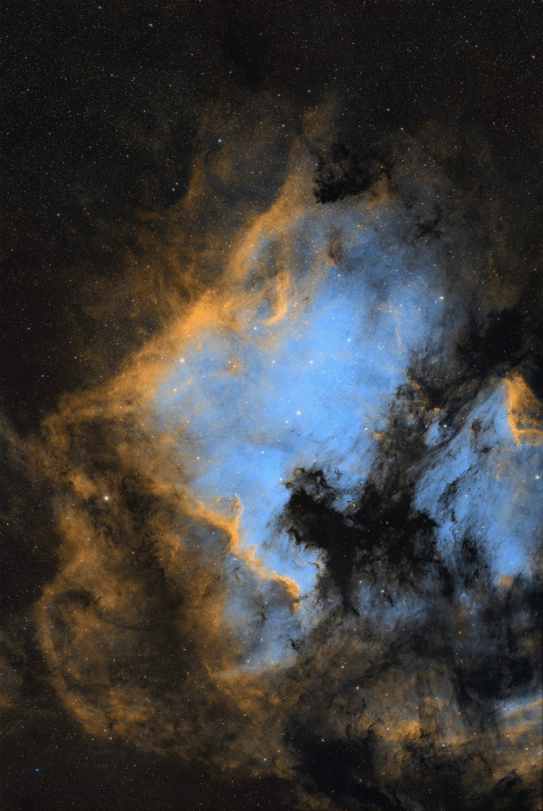

The dark silhouette
This large dark shape cuts into the bright blue region. Its irregular boundary is one of the strongest contrasts in the photograph.
Look a little closer · 04
Follow three details through my photograph. Explore its shapes, colour and contrast at your own pace.

Tap a number to learn more. Move your mouse or tap the image to inspect a detail. Use the sliders for precise control.
This large dark shape cuts into the bright blue region. Its irregular boundary is one of the strongest contrasts in the photograph.
Behind the photograph
My processing toolkit includes Siril, SETI Astro Suite / Cosmic Clarity, and Affinity Photo. The companion comparison page shows my supplied TIFF version beside the gallery edit.
The TIFF version offers another view of this field. It is a processing version, not an untouched camera exposure.
Trace the bright edges, dark shapes and faint textures. These hotspots guide your eye to features visible in this photograph.
Use the comparison slider to see how the two versions differ. The colours shown belong to these processed images.
These are visual guide points, not measured sky coordinates. Their names describe visible shapes in this processed photograph; they are not catalogue identifications.